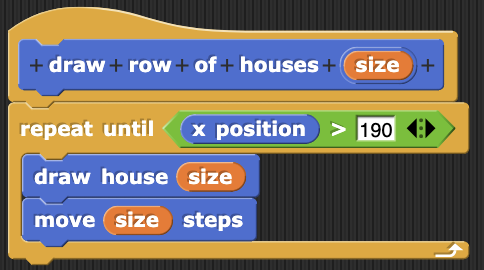
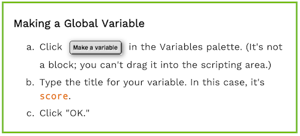
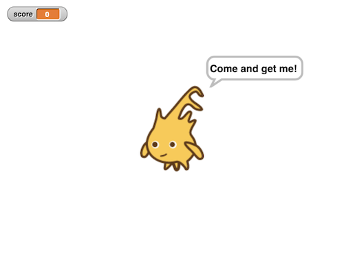
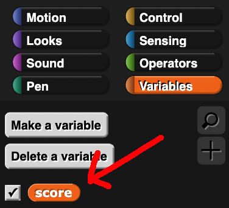
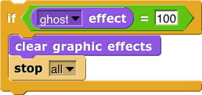

Keeping Score
Let's upgrade our Click Alonzo game by tracking and displaying the player's score!
In order to keep track of the score, we can use variables, which allow us to store and modify a value. We can store all kinds of values using variables, such as numbers or even words.
In Snap!, user-created variables are colored orange. In fact, if you've done the Row of Dollhouses project, you've already seen and used variables!
When we modified our custom blocks to take an input called size, that input was stored in a variable that we could reuse to draw houses of that same size. Let's make our own variable to keep track of the score!
-
Open your “Click Alonzo” project. If you don’t have it, use the teachers’ solution.
-
Create a new variable called score.
Notice when you added the score variable, a counter appeared on the top left corner of the stage that shows the value stored in score.
 -
Predict: what do you think these blocks will do? Add them to your scripting area and click on them. Try changing the numbers and clicking on them again. What happened?
-
Add one block to your code so that when
 is clicked at the beginning of the game, the score is initialized to zero.
is clicked at the beginning of the game, the score is initialized to zero. -
Make it so that so that when Alonzo is clicked, the score increases by one.
-
Make it so that when Alonzo moves without being clicked, the score decreases by one.
-
Right now, the game ends when the ghost effect is equal to 100:

Change the winning condition so that the game instead ends when the score is equal to some number, like 5. When the player wins, we should reset the score back to zero.
To use the "score" variable, drag its oval-shaped block from the left-side bar. Try double clicking it -- what happens? -
Now let's add another variable called winning score. Change your code so that the game ends when the score is equal to the winning score
-
If the score becomes too negative, the game can become very hard or impossible! Try it for yourself. Then, change your code to never let the score fall below zero.
-
(Optional) Right now, the ghost effect changes independently of the score. We should make it so that whenever the score changes, we also set the ghost effect to be a number between 0 and 100 that depends on how close the score is compared to the winning score.
For example:- If the winning score is 2, then a score of 0, 1, and 2 should set the ghost effect to 0, 50, and 100 respectively.
- If the winning score is 5, then a score of 1 should set the ghost effect to 20.
You should use some of these blocks:
-
(Optional) The
 block will ask the player a question (which we can put in the blank space in the block), and then wait for the player to input an answer and press enter. Then, that answer will be stored in the
block will ask the player a question (which we can put in the blank space in the block), and then wait for the player to input an answer and press enter. Then, that answer will be stored in the  variable.
variable.
Ask the player for a difficulty level when is clicked at the beginning of the game, then set the winning score equal to their .
Credits
Content adapted chiefly from page 4 of BJC U2L1 "Keeping Score with Global Variables"